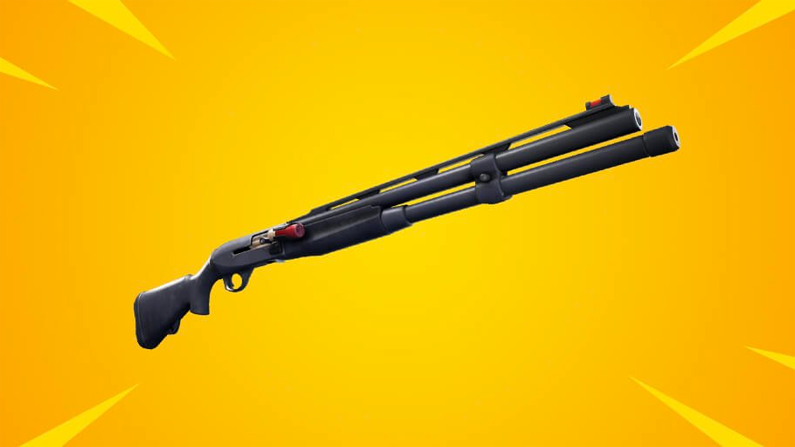

A személyiségmodell
tekintsd egy
térképnek, ami segít
eligazodni
magadban.

Töltsd ki 10 perces
ingyenes tesztünket és
fedezd fel kivételes
tehetséged!

INTJ-A / INTJ-T
Fantáziadús stratégiai gondolkodók, mindenre kész tervük van.

INTP-A / INTP-T
Innovatív feltalálók, kielégíthetetlen tudásszomjjal.
ENTJ-A / ENTJ-T
Bátor, fantáziadús és erős akaratú vezetők, mindenre találnak módot, vagy ha nem, kitalálnak egy újat.

ENTP-A / ENTP-T
Okos és kíváncsi gondolkodók, akik minden szellemi kihívásnak állnak elébe.
ISTP-A / ISTP-T
Merész és gyakorlatias kísérletezők, mindenféle eszköz mesterei.

ESTP-A / ESTP-T
Okos, energikus és nagyon felfogó emberek, akik igazán élvezik a peremen élni

ESFP-A / ESFP-T
Spontán, energikus és lelkes emberek körülöttük az élet soha nem unalmas.

ISFP-A / ISFP-T
Alkalmazkodó és elbűvölő művészek, mindig készek új dolgokat felfedezni és kipróbálni.

ISTJ-A / ISTJ-T
Praktikus és a tényeket kedvelő személyek, a megbízhatóság mintaképei.

ISFJ-A / ISFJ-T
Nagyon elkötelezett és meleg védelmezők, mindig készen állnak szeretteik védelmére.

ESTJ-A / ESTJ-T
Kiváló ügyintézők, náluk jobban senki nem igazgatja a dolgokat és az embereket.

ESFJ-A / ESFJ-T
Az emberekkel törődő, népszerű, társasági emberek, akik mindig készek másokon segíteni.

INFJ-A / INFJ-T
Csendes és misztikus, ugyanakkor nagyon inspiráló és fáradhatatlan idealisták.

INFP-A / INFP-T
Költői, kedves és önzetlen emberek, mindig készek tenni a jó ügy érdekében.

ENFJ-A / ENFJ-T
Karizmatikus és inspiráló vezetők, hallgatóságukat képesek teljesen lenyűgözni.

ENFP-A / ENFP-T
Lelkes, keatív és társaságkedvelő szabad lelkek, nagyon könnyű mosolyt csalni az arcukra.